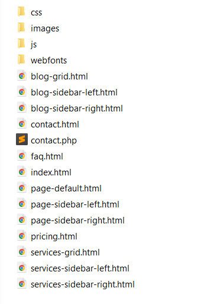
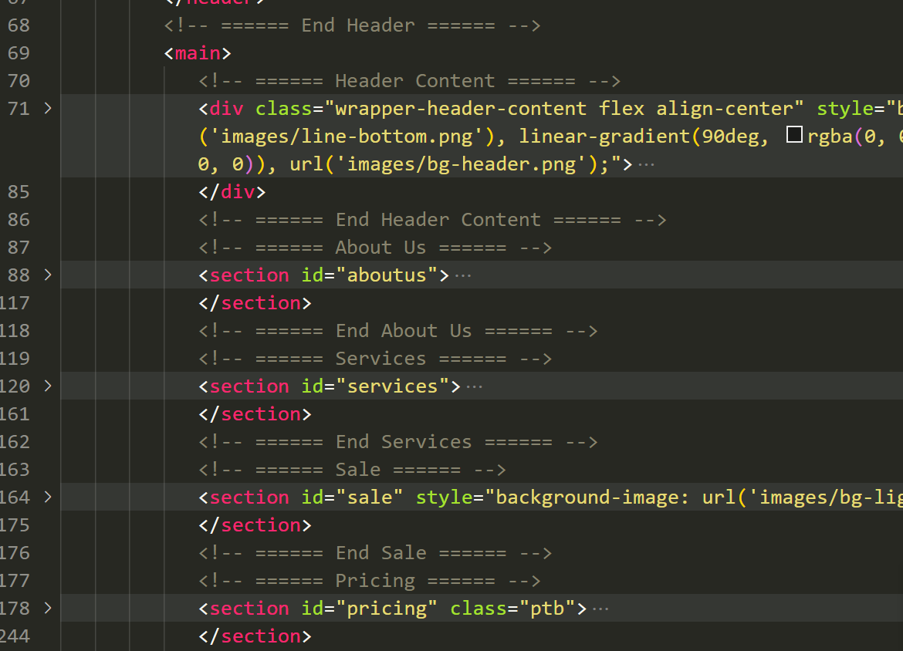
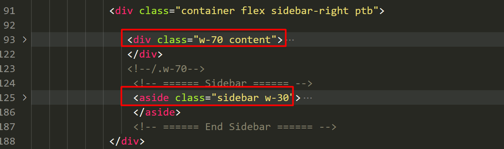
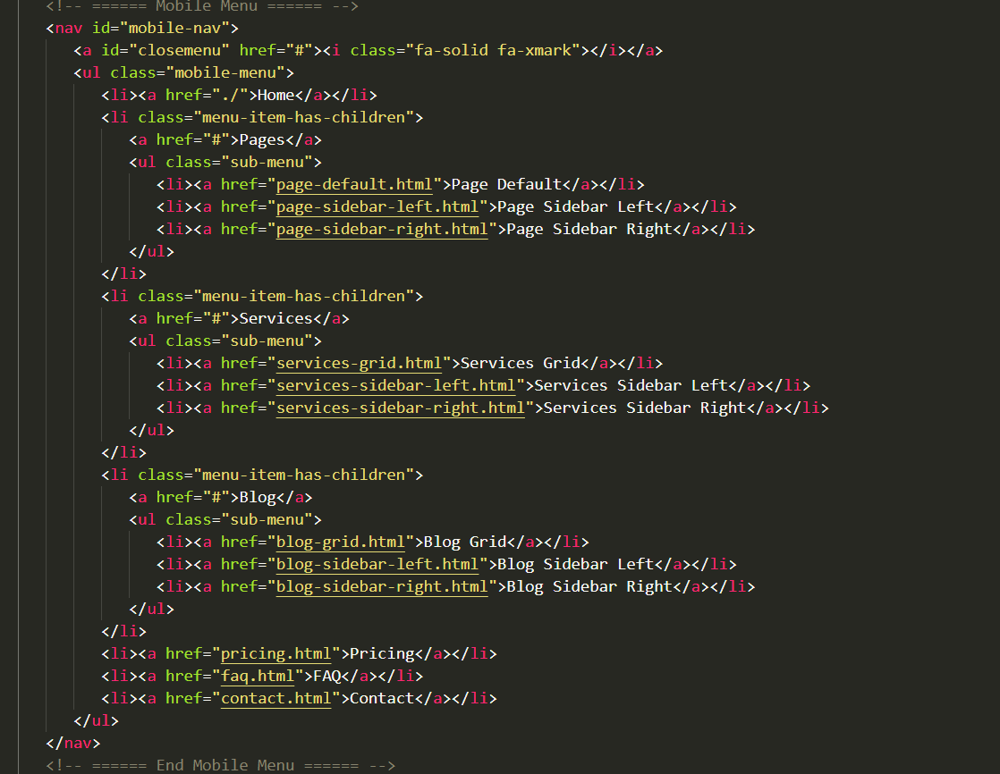
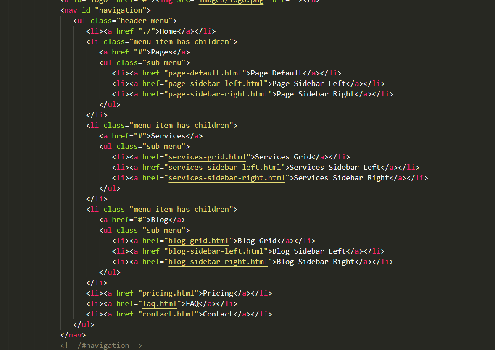
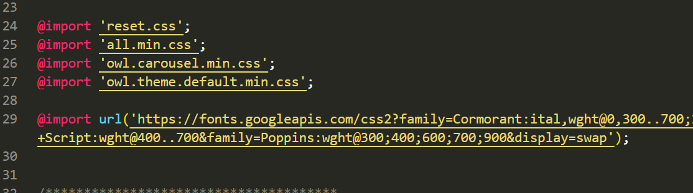
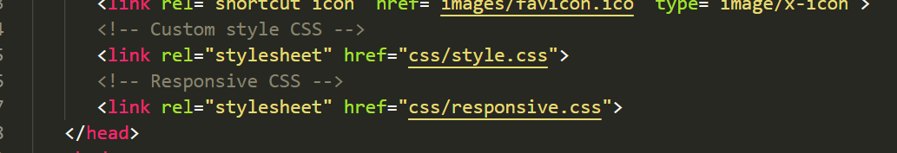
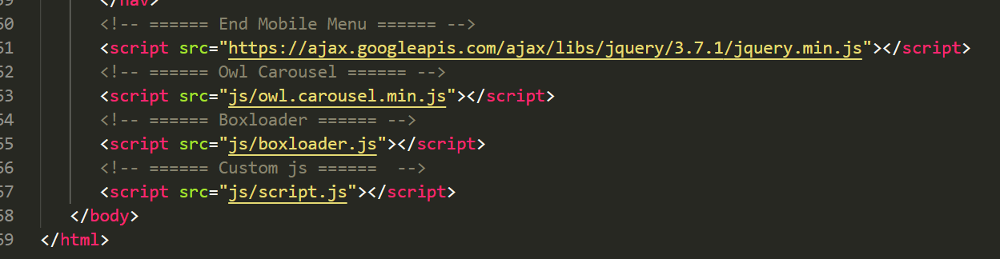
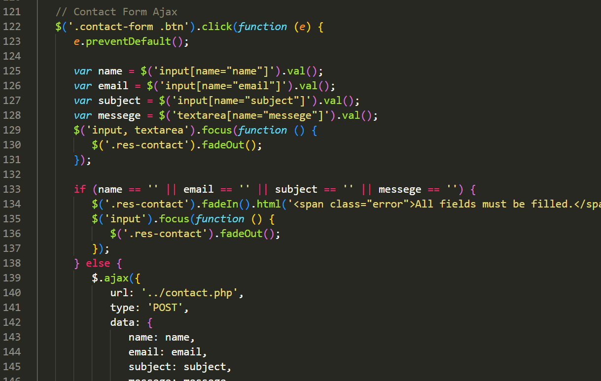
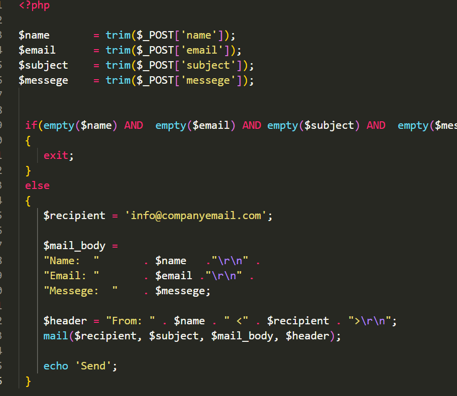

Bliss - Beauty Salon & Spa Service HTML5 Template
Created: 29/10/2024
By: OWCODING
Intro
- Built with HTML5 & CSS3
- Google and Fontawesome fonts
- Clean layered menu
- Friendly to CMS WordPress
- Easy to customize
- Fully Responsive
- Clean Code
- Free Images
- W3 Valid 100%
- Modern and Creative Design
html structure
template folder structure.

each of these pages consists of blocks that can be replaced with each other with minimal edits if necessary.
homepage structure

sidebar page structure has two classes that divide the page into two parts.

The template has two menus. One main, the second mobile.

Main menu.

CSS Files and Structure
I'm using two CSS files in this theme.
style.css - this file contains all template styles, colors, sizes, paddings. It includes other additional style files
- reset.css - reset browser styles
- all.min.css - icon font Font Awesome
- owl.carousel.min.css, owl.theme.default.min.css - Owl Carousel 2

responsive.css - media queries included as a separate file

JavaScript
scripts are included at the bottom of the page
- jquery.min.js
- owl.carousel.min.js
- boxloader.js
- script.js - The main custom javascript file

Contact Form
The submit form handler is located at the root of the folder, and is called contact.php
Form validation is in file script.js
Submitting the form is implemented using ajax.
form validation code

setting up form submission
Сhange the variable $recipient to your Email to receive letters.
